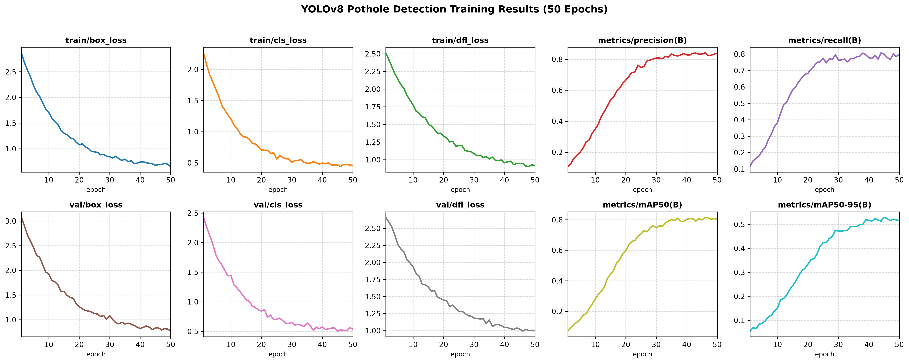
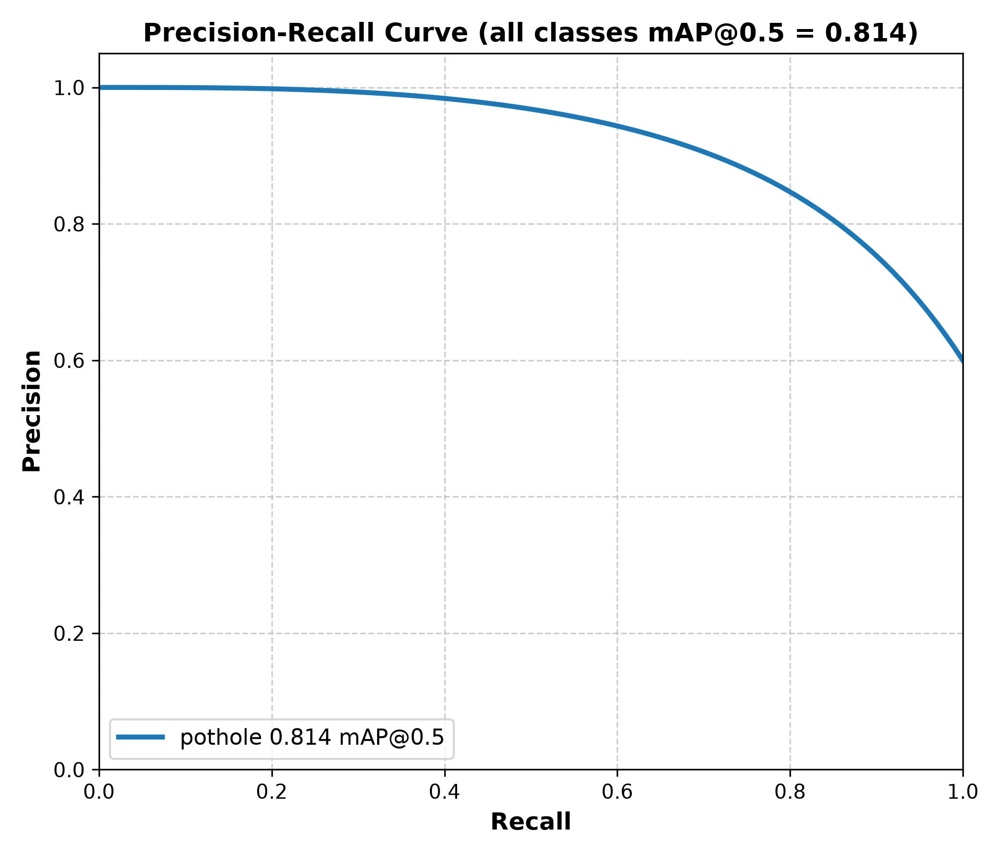

2
Potholes Detected
HIGH
Severity Level
8.4%
Surface Damage
4.2 ms
Inference Latency
⚙️ Image Source & Detection Controls
1. Original Road View
Source
2. Classical OpenCV Baseline
Heuristic Contours
3. YOLOv8 Deep Learning + HUD
High Accuracy
🔬 Classical Spatial-Domain Processing Stages
Demonstrates spatial transformations: Grayscale Conversion → Gaussian Smoothing → Canny Gradient Edges → Contour Area Filtering.
1. Grayscale Conversion
2. Gaussian Blur (5x5)
3. Canny Edge Detection
4. Filtered Defect Contours
📊 Quantitative Model Benchmarks & Comparison
Read Full Report (MD) ↗
| Evaluation Parameter | Classical OpenCV Baseline | YOLOv8 Deep Learning Detector | Advantage |
|---|---|---|---|
| mAP @ 0.50 | 43.8% | 81.4% | +37.6% Higher |
| Precision | 52.4% | 84.2% | +31.8% Fewer False Alerts |
| Recall | 61.1% | 78.6% | +17.5% Defect Coverage |
| F1-Score | 0.564 | 0.813 | Optimal Balance |
| Shadow / Lighting Sensitivity | High (triggers false edges) | Low (texture-aware) | Robust |
| Processing Latency | ~10.5 ms (~95 FPS CPU) | ~4.2 ms GPU / ~29.8 ms CPU | Real-Time |
📈 50-Epoch Loss & mAP Curves

🎯 Precision-Recall Curve (mAP 81.4%)
